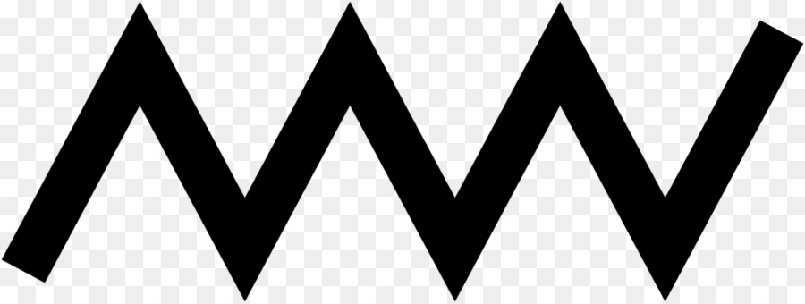

«Зигзаги» - личности творческие, креативные, оригинальные. Они отвергают проторенные тропинки, штампы и стереотипы, предпочитая делать все по-своему, изобретая нестандартные ходы и решения. Среди этих оригиналов часто попадаются харизматичные, обаятельные люди. «Зигзаги» достаточно легко выходят из себя, а их настроение порой меняется быстрее, чем курс валют во время торгов на бирже. «Зигзаги» - прекрасные ораторы, которые готовы поделится идеями, пришедшими им в голову, со всеми желающими (впрочем, и нежелающими тоже).
